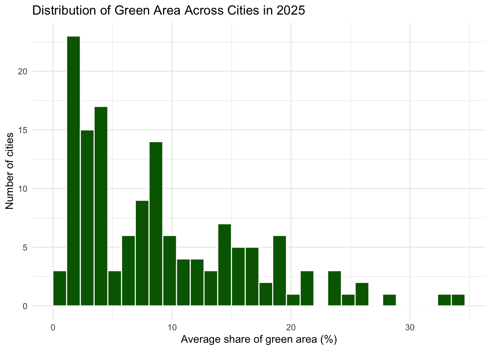
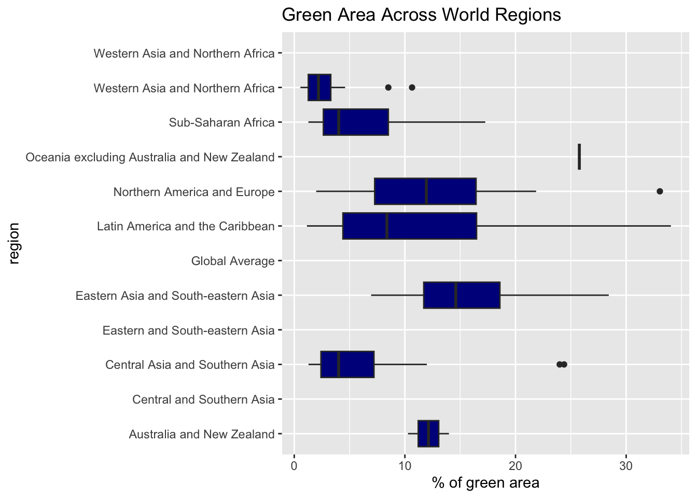
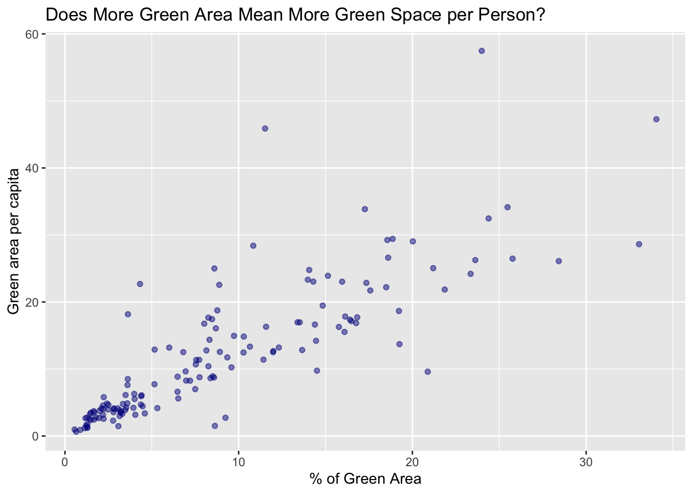

TidyTuesday: Urban Green Space
🌿 How Green Are the World’s Cities?
Exploring urban green space through three connected visualizations
For this TidyTuesday project, I explored how green space is distributed across cities, how it differs across world regions, and whether cities with more green area also provide more green space per person.
About the Data
🌎 Source
UN-Habitat
Urban Indicators Dataset
📍 Observations
Cities and urban areas
across different years
📊 Size
5,600 observations
10 variables
The dataset includes measurements such as the percentage of urban land covered by green area and the amount of green space available per person.
01. Viz
Question
How is the percentage of green area distributed across cities around the world in 2025?
Code
urban_2025 <- urban |>
filter(year == 2025)
ggplot(urban_2025, aes(x= averageShareOfGreenAreaInCityUrbanAreaPct))+
geom_histogram(fill = "darkgreen", color = "white")+
labs(title = "Distribution of Green Area Across Cities in 2025",
x = "Average share of green area (%)",
y = "Number of cities"
)+
theme_minimal()
💡 What I Found
Among cities with available data, many are concentrated around roughly 3%–10% green area.
The distribution is right-skewed, meaning cities with especially high percentages of green space are much less common.
Why this works
- Makes the overall distribution easy to see
- Clearly shows where most cities are concentrated
What I would improve
- Experiment with bin width
- Add a reference line or annotation
02. Viz
Question
Do cities in different world regions have different amounts of green area?
Code

💡 What I Found
Green-area percentages vary across world regions.
Some regions show relatively higher values, while others tend to have lower percentages. There is also substantial variation within many regions, meaning cities in the same broad region can still look very different.
Why this works
- Horizontal layout makes region labels easier to read
- Boxplots show both typical values and variation
What I would improve
- Reorder regions for easier comparison
- Clean up long region labels
03. Viz
Question
Do cities with more green area also have more green space per person?
Code

💡 What I Found
Cities with higher percentages of green area generally also tend to provide more green space per person.
However, the relationship is not perfect. The scatterplot still contains substantial variation and several outliers.
Why this works
- Directly compares two quantitative variables
- Transparency helps reduce overlapping points
What I would improve
- Label interesting outliers
- Explore whether population size explains some variation
🌱 Final Takeaway
These three visualizations tell a connected story.
First, high percentages of urban green space are relatively uncommon.
Second, access to green space differs across world regions.
Finally, cities with more green area generally also offer more green space per person — but there are important exceptions.
This project helped me move from a univariate distribution to regional comparison and finally to a relationship between two quantitative variables, while using visualization to build a connected data story.